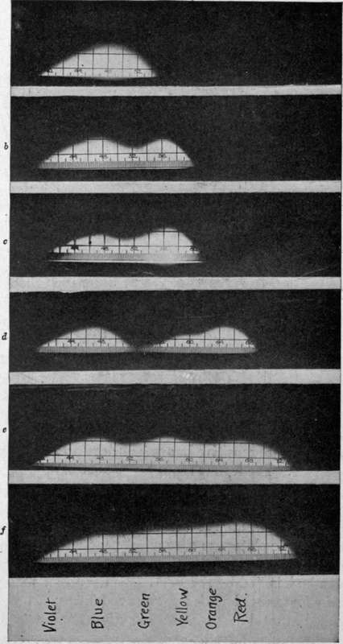

Color Sensitiveness
Description
This section is from the book "Airplane Photography", by Herbert E. Ives. Also available from Amazon: Airplane photography.
Color Sensitiveness
Complete specifications for an aerial plate cannot be made solely on the basis of its speed, contrast, latitude, threshold, and other sensitometric values which have to do only with the intensity of the light acting on it. These in general apply to photography from low altitudes, where the illumination and natural contrast of the subject are the only factors to consider. When higher altitudes are reached the interposition of haze decreases the already deficient contrast, calling either for the development of more contrast in the plate* or for the use of color filters to cut out the action of the blue and violet light predominant in haze. Along the lines discussed in the last section, it is not surprising to find that some plates are better than others for bringing out gradations masked by haze, even though no filters are used and though the plates are similar in color sensitiveness. But the limitations to securing contrast by manipulating the characteristic curve of the plate are soon reached, and it becomes necessary to resort to haze-piercing color filters, used with color sensitive plates.
Roughly, two general types of color sensitive emulsions may be distinguished: first, those in which sensitiveness to green and yellow is added to the natural blue sensitiveness, and second, those sensitive in a useful degree to all colors of the spectrum. The former are called iso- or ortho-chromatic, the latter panchromatic emulsions. Spectrograms exhibiting the distribution of sensitiveness throughout the spectrum for several representative plates are shown in Fig. 105. Orthochromatic plates are adequate for use with light yellow filters and have the slight practical working advantage that they can be handled by red light. Panchromatic plates are necessary for use with dark orange or red filters. They must be handled in total darkness or in an exceedingly faint blue-green light, taking advantage of the common drop in sensibility in that region of the spectrum. Plates can, indeed, be sensitized for the red alone, leaving a gap of almost complete insensibility in the green, as shown in the fourth spectrogram of Fig. 105. When used with a yellow filter these plates behave as do panchromatic plates with a red filter.
Fig. 105. - Spectrograms of representative photographic plates: a, ordinary plate; b, ortho-chromatic plate; c, specially green-sensitive plate; d, red sensitive plate, insensitve to green; e, panchromatic plate; f, specially red-sensitive panchromatic plate.
A rougher idea of color sensitiveness than is given by spectrograms is furnished by the tri-color ratio, which is the ratio of exposure times necessary with white light to give equal photographic action through a certain set of red, green and blue filters, expressed in terms of the blue exposure as unity. In an excellent panchromatic plate the three exposures would be equal. In an orthochromatic plate the red exposure will be too large to be figured. In interpreting either spectrograms or tri-color ratios care must be taken that the absolute exposures necessary are known. Thus a relatively high red sensitiveness may mean merely low absolute blue sensitiveness.
Two methods are used in imparting color sensitiveness. Either the sensitizing dye is incorporated in the plate emulsion before it is flowed; or the plate is bathed in a dye solution not long before using. The latter method gives higher color sensitiveness but poorer keeping quality, and is not a practical method for field operations. Greatly enhanced sensibility may be given by treatment with ammonia, but this again is a method for laboratory rather than field use.
Continue to:
Tags
camera, lens, airplane, aerial, film, exposure, photography, maps, birdseye